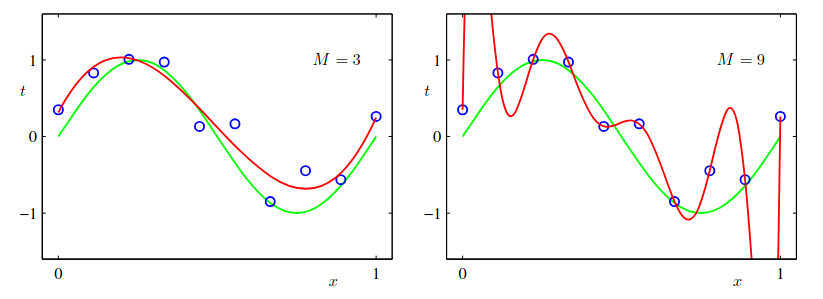
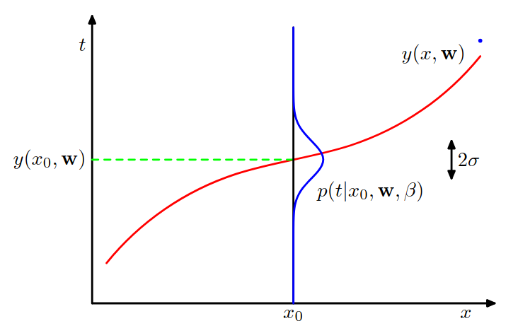
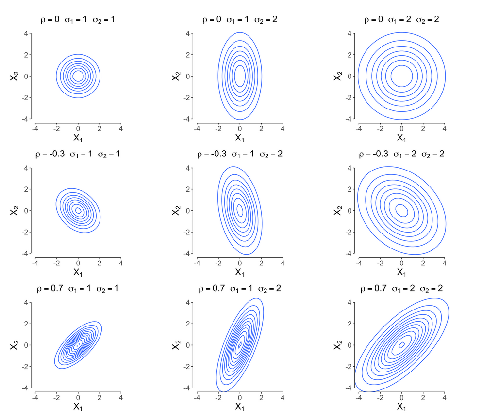

Mathematical insights into Regularisation
This post deals with some deep mathemtical insights into why regularisation is done the way it is and how does it impact model learning, mathematically.
Some Background
Well Neural Networks are essentially function-approximaters - you give then a bunch of data points and the corresponding outputs and then try to predict output over an unseen data point. Now suppose I am trying to fit in a polynomial with coefficients as weights and a controllable degree parameter -- this is something I will try several times to see what works the best. Consider the two cases - $d =3$ and $d = 9$ trying to fit a sinusoid.

Well for the latter the curve becomes too wigly and less generalised -- although our error is zero - by the fundamental theorem of Algebra - a polynomial of degree d would have atmost d real roots and 10 points are sufficient to describe a polynomial fully -- put another way - as long as you have $\leq$ 10 points you can "fit" your dataset fully! As we can see, this leads to generalisation problems. So there are two issues:
- Excessively many parameters make the model more complicated than required and hence not smoothly generalise
- The input data is more often than not "Noisy" -- the outputs that you see are typically true ouput + some error $\epsilon$ i.e., driving the loss to 0 means fitting on wrong (somewhat) data!
Thus the objective $$\min \space \mathcal{L(\theta)}$$ is not a good one! Of course looking at graphs is not feasible for large datasets and complicated functions, we need something mathematical and algorithmic - Regularisation solves this problem :
We try to minimise $\mathcal{L(\theta)} + \Omega(\theta)$ where $\Omega(\theta)$ somehow penalises the model complexity
Often we have seen people using $L_2$ regularisation or weight decay (well in practise this means the coefficient $\alpha$ of the regulariser) $$\min \mathcal \space {L(\theta)} + \frac{\alpha}{2} \norm{w}^2 $$
But where does this come from ? An intuitive explanation is that this penalises the excessive complexity these parameters might incur by taking large values -- I know right, not satisfactory!
A bit of detour:
The Bayesian Paradigm:
This is one school of thinking in statistics and learning theory. This views selecting parameters for a distribution as maximising probability : we already have some prior idea of what those parameters (called weights in our case) should look like and the additional information received by the sample data helps us refine our understanding. Lets do this concretely -
Assume that the weights in our model have a Gaussian prior distribution with zero mean. For now assuming there is only one weight: $$p(w;\sigma) = \mathcal{N}(w|0, \sigma^2)$$
To measure proximity of the chosen parameters to reality we use the technique of maximum likelihood estimation -- multiply the probabilities of all the data points with parameters (here weights) as variables and then optimize this product by differentiating and setting it to zero, and using the corresponding parameters as optimal -- in essense this gives us the parameters that are most likely for a model
For concreteness - suppose we observe a dataset $t = {x_1, x_2 ... x_n}$ Say after seeing the data my posterior distribution is $p'(w,t)$ -- this means what is my "posterior" view of how likely a particular weight could be AFTER seeing the data
To summarise - the prior distribution is my initial worldview on what weights are the most highly likely to be, without seeing any data. Now this view changes as I see some data. Mathematically this would mean: $$p(w,t) = p(t|w)*p(w)$$ Now what is $p(t|w)$? -- How likely are these data points ($(x,y)$ pairs )given a parameter $w$. A bunch of independently drawn points means -- multiply ! Thus $$p(t|w) = \prod_{i=1}^{n} p(x_i,y_i|w)$$
Now maximising $p(w,t)$ gives us the likelihood of how well a particular $w$ would go with the data points in hand and our problem reduces to $$\max p(w)\times \prod_{i=1}^{n} p(x_i|w)$$
We now $p(w)$. Lets also try to solve problem 2 of the two mentioned above, and include the error term, say the observed datapoint $y_i = f(x_i,w) + \epsilon$ for some true source function $f$ and the error is gaussian with zero mean and variance = $\beta (>0)$ i.e., $\epsilon \sim \mathcal{N}(\epsilon|0,\beta)$ It is easy to see that this is essentially $$y_i \sim \mathcal{N}(y_|f(x_i,w),\beta)$$ Essentially, the actual value is the observed value, with some small possible error around it

$$\Rightarrow p(x_i,y_i|w) = \frac{1}{\sqrt{2\pi\beta}} e^{-(y_i - f(x_i,w))^2/2\beta}$$ This looks ugly -- I know right, standard trick -- take logartihm both sides!
since log is monotonically increasing -- it does not affect the objective and hence our problem is further reduced to
$$\max_{w} \sum_{i=1}^{n}\log(p(x_i,y_i; w)) + \log(p(w))$$
$$=\max_{w} -(\sum_{i=1}^{n}\frac{1}2{\log(2\pi\beta)}+\frac{(y_i - f(x_i,w))^2}{2\beta}) - \frac{1}2{\log(2\pi\sigma^2)}-\frac{w^2}{\sigma^2}$$ Well assuming $\sigma$ and $\beta$ are constant, $$=\min_{w} (\sum_{i=1}^{n}\frac{(y_i - f(x_i,w))^2}{2\beta}) + \frac{w^2}{\sigma^2}$$ Hold on ......... DOES THIS SEEM FAMILIAR ???? HOLY YEAHH
this is literally Mean Squared loss + $l_2$ regularisation !!!
Finally, to include more weights we just need to think of weight as a vector in a mutlivariate sense.
How would the gaussian look like ? The mean as you would guess is a vector $\boldsymbol{\mu}$. Now since there are many variables -- we would like to measure the sensitivity of movement of a variable when we tweak one variable slightly -- well this is what the variance captures in the univariate sense. Hence instead of a number we have an $n\times n $ matrix known as the covariance matrix -- how much are two variables $x_i$ and $x_j$ related to each other ? Thus $$p(\mathbf{w}) = \frac{1}{(2\pi)^{d/2}|\boldsymbol{\Sigma}|^{1/2}} \exp\left(-\frac{1}{2}(\mathbf{w} - \boldsymbol{\mu})^T \boldsymbol{\Sigma}^{-1} (\mathbf{w} - \boldsymbol{\mu})\right)$$
Notice the similarity -- if $\mathbf{w}$ has just one variable, this reduces to our original expression.
A note on quadratic vector expressions: an expression of the form $\sum\sum w_{ij} x_i x_j$ can be typically written in this format -- $x^TWx$ -- the ij element representing the term $x_ix_j$.
Now setting $\boldsymbol{\mu = 0}$, and setting $\boldsymbol{\Sigma} = \sigma^2I$, for simplicity (for getting a feel for how gaussians change with the choice of $\boldsymbol{\Sigma}$ check this post. Below is an image from there))

The expression becomes similar to the above, $$=\min_{w} (\sum_{i=1}^{n}\frac{(y_i - f(x_i,w))^2}{2\beta}) +\left(\frac{1}{2}\mathbf{w}^T \mathbf{w} \right)$$
Observe that $\mathbf{w}^T \mathbf{w} $ is indeed the $l_2$ norm.
By the way ...
Q : How is Bayesian Learning related to overfitting though?
A: Well it allows the model to not rely too much on the data it has seen -- it has some extra "plausibility" information. Recall the sine curve - the Gaussian prior assumption "informs" the model of what would make more sense.
Q: Sure, why only a Gaussian prior ?
A:
- according to the central limit theorem the sum of a large number of independent distributions converge to a gaussian - this takes into account the large number of random factors and makes it a reasonable choice to being with. A lot of distributions in the nature in fact turn out to be Gaussian.
- According to information theory, among all continuous distributions with a given mean and variance, Gaussian has maximum entropy, making it the "least informative" -- yep u heard me right -- this has lesser information than random uniform! (more on this in another post)
Geometric insights
(since our params are w, not writing theta) Our objective is $$ \widetilde{\mathcal{L}}(w)=\mathcal{L}(w)+\frac{\alpha}{2}|w|^2 $$ Taking gradients both sides, (note that w is a vector WLOG) $$\nabla \widetilde{\mathcal{L}}(w)=\nabla \mathcal{L}(w)+\alpha w$$
To see why $\nabla(\norm{w}^2) = 2w$, expand $\norm{w}^2 = \sum w_i^2$, now taking the derivative with respect to the $i$th component, gives $2w_i$ hence the gradient vector is $2w$
Now consider the multivariate Taylor's approximation of the train error function upto the second order,
Observe the similarity with the univariate case, $u^T \nabla \mathcal{L}\left(w^*\right)$ is the linear and $\frac{1}{2} u^T H u $ is the quadratic term. $H$ is the Hessian matrix and is some sort of a "multivariate double derivative" -- the i,j term tells how much the partial derivate wrt ith variable changes when you move a little bit in the jth variable -- and hence the matrix
Well I'll skip a good deal of math here to keep things simple -- if you perform the eigenvalue decomposition of $H$, you can write $$\widetilde{w}=(Q D Q)^T w^*$$ where $$D=(\Lambda+\alpha I)^{-1} \Lambda $$ and $\Lambda$ is the diagonal matrix of eigenvalues of $H$.
Now comes the fun part! $$(\Lambda+\alpha I)^{-1} \Lambda=\left[\begin{array}{llll} \frac{\lambda_1}{\lambda_1+\alpha} & & & \newline & \frac{\lambda_2}{\lambda_2+\alpha} & & \newline & & \ddots & \frac{\lambda_n}{\lambda_n+\alpha} \end{array}\right] $$
This expression reduces to a scaling every coefficient of $w^*$ by some factor. The most important eigenvalues are those whose values are high, therefore when $\lambda_i >>\alpha$ the coefficient of that index is almost 1, retaining it fully and when $\lambda_i <<\alpha$, the parameter will vanish to 0.
Thus regularisation in essense preserves the important features only and does not overfit to minute details !!
Biblio:
- Amazing slides by Prof. Mitesh Khapra
- Christopher Bishop's Book on PRML
Cool stuff to check out
- PLEASE DO - 3B1B deep learning playlist